Misawa
Misawa · Aomori
Misawa
Highlighted on the Aomori map.
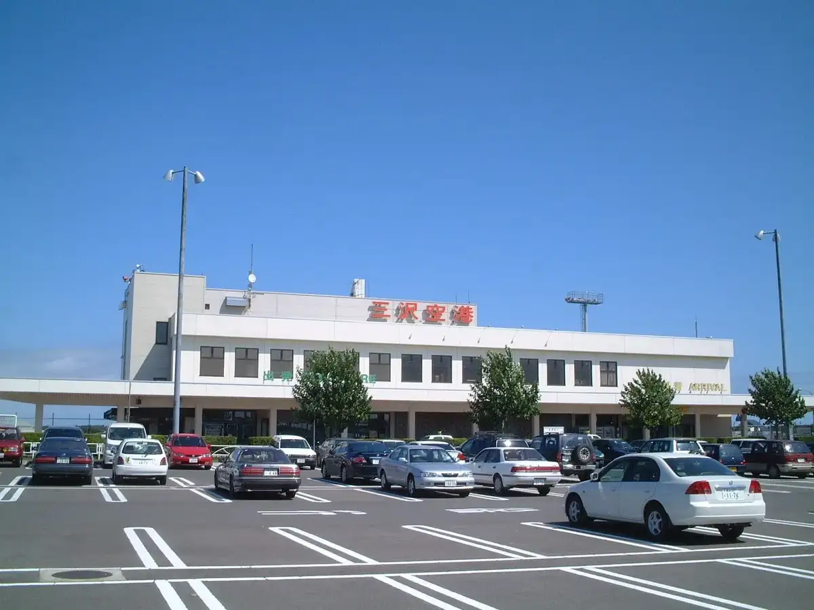
Stay
AURUM MISAWA（オーラム ミサワ）
Aurum Misawa ( Ooramu Misawa )
ホテルルートイン三沢
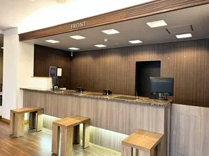
Hoteruruutoin Misawa
ホテルルートインＧｒａｎｄ三沢－ＥＡＳＴ ＣＯＵＲＴ－
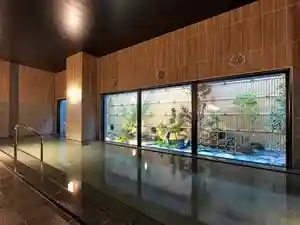
Hoteruruutoin G R A N D Misawa - E A S T C O U R T -
青森屋 by 星野リゾート
Aomori Ya By Hoshino Rizooto
三沢プリンセスホテル
Misawa Purinsesuhoteru
アネックス プリンセスホテル
Anekkusu Purinsesuhoteru
三沢シティホテル
Misawa Shiteihoteru
ホテル トラストイン
Hoteru Torasutoin
ビジネスホテル・ビッグウエスト
Bijinesuhoteru Bigguuesuto
ホテルグランヒルつたや
Hoteruguranhiru Tsutaya
Dining
酒菜彩々ほうりょう
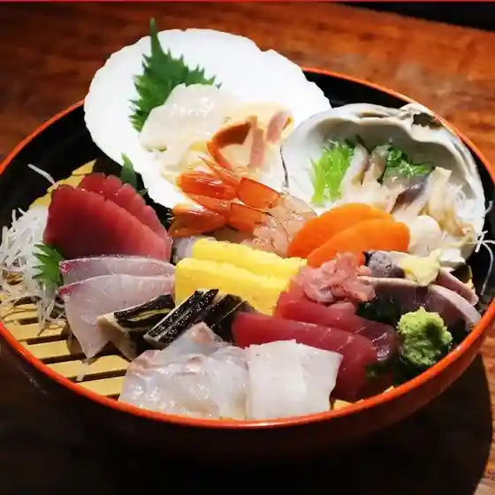
Shusai Saisai Houryou
牛角 三沢店

Gyuukaku Misawa Mise
君乃家食堂
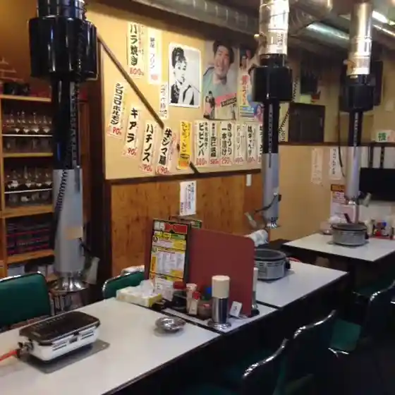
Kun No Ie Shokudou
魚民 三沢アメリカ村店
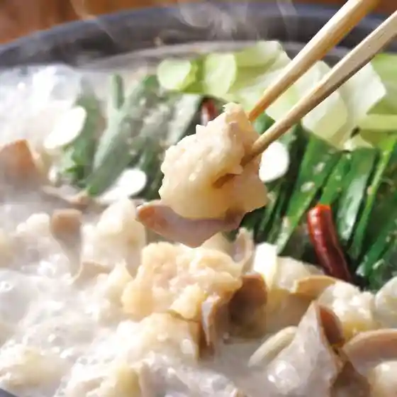
Uotami Misawa Amerika Mura Mise
焼肉 からし亭 三沢店
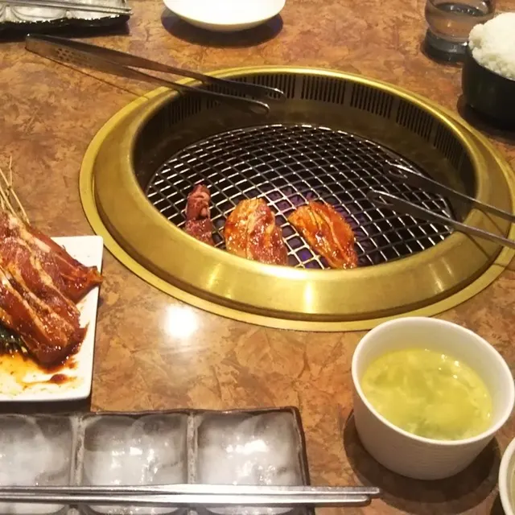
Yakiniku Karashi Tei Misawa Mise
North 40-40
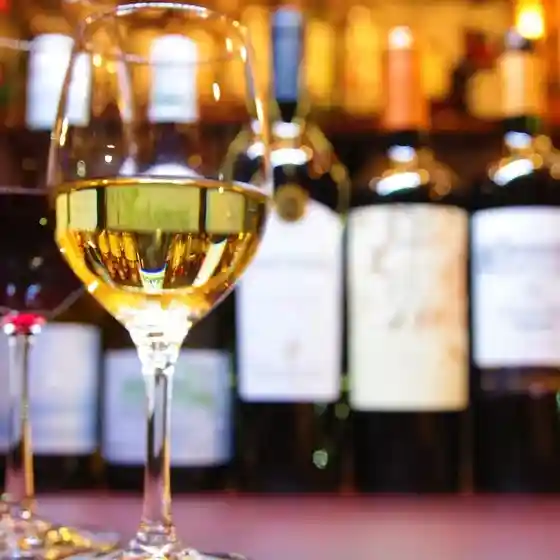
North 40-40
Tubes
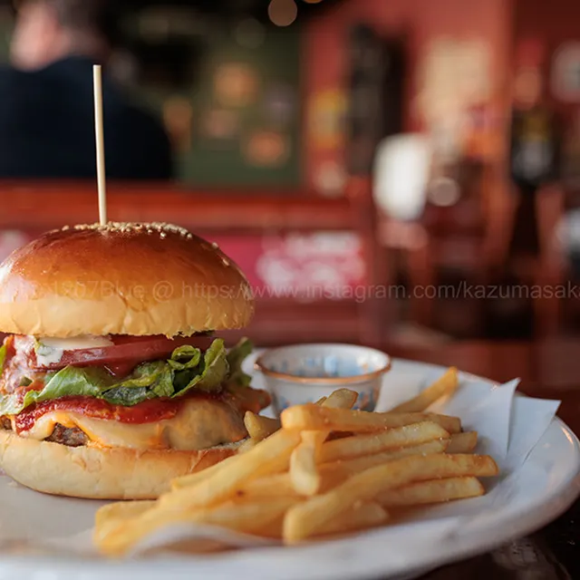
Tubes
ココス 三沢南町店
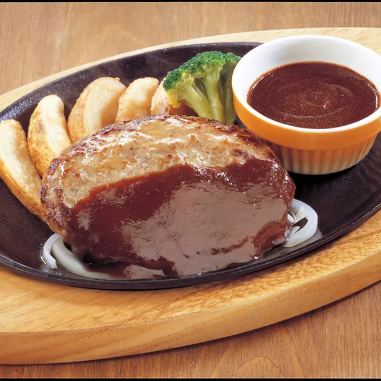
Kokosu Misawa Minamimachi Mise
呑み処ふくろう
Nomi Tokoro Fukurou
アンクル アメリカ村店
Ankuru Amerika Mura Mise
きらく亭
Kiraku Tei
かこ（水主）
Kako ( Kako )
喜久寿司
Yoshihisa Sushi
吉野家 三沢松園町店
Yoshinoya Misawa Shouen Machi Mise
文内
Bunnai
たこ焼き たこぶん
Tako Yaki Takobun
あじおとめショップ
Ajiotome Shoppu
レストラン三沢空港
Resutoran Misawa Kuukou
ほん田
Hon Ta
Home cafe
Home Cafe
初花
Hatsuhana
まいど・炭焼 中央店
Maido Sumiyaki Chuuou Mise
小僧寿し 三沢堀口店
Kozou Hisashi Shi Misawa Horiguchi Mise
むうみんcafe
Muumin Cafe
Sights
Misawa Tourist Information Center
Staffed tourist information desk right by Misawa Station.
Odanai-numa Pond
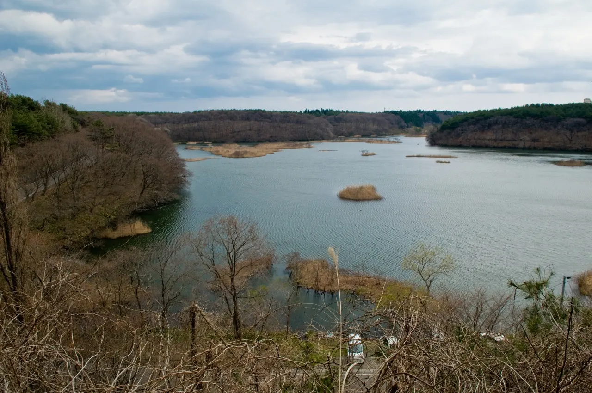
2 km pond in Misawa Citizens' Forest with a spring among Aomori's top 10 waters, covered in white water lilies in season.